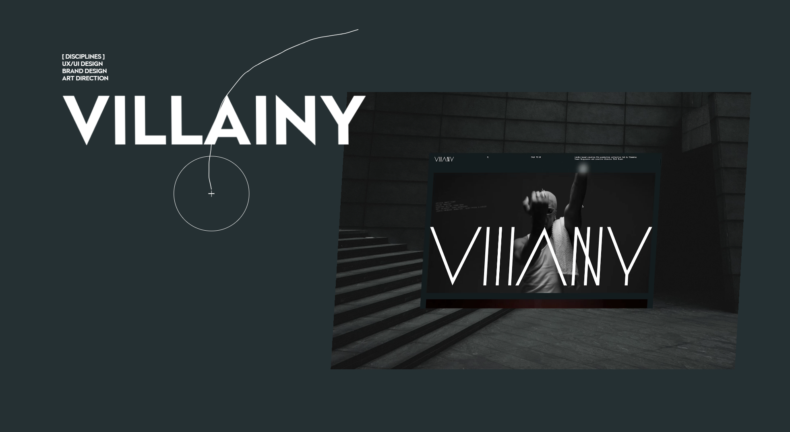

Interactive Media Assignment 1
Hao Mei-S4164444
Q1: What was the first thing you paid attention
to when interacting with the experience?
The first element that catches my attention was the bold,
high-contrast typography combined with a large scale of video on the landing page.
The video on the page created a strong visual hierarchy and immediately dominated the whole screen.
This design choice created a striking first impression and suggested that the experience priorities
visual impact over text clarity, guiding the user to focus on the aesthetic and the video about
Rich Brown rather than detail reading.

Figure 1: Coverpage of Rich Brown's website.
Q2: Spend two minutes with the experience and create a list of each of your discreate actions.
Through the two minutes interaction experience, I have scrolled through the homepage and paused to observe the animated transitions,
hover my cursor over some click able buttons, like project thumbnails, and contacts to see the transaction animation and
I clicked in to some of these project pages, then navigate back to continue scrolling the rest of the page. These actions were an exploration,
largely driven by my curiosity rather than clear guide from the website, indicating a non-linear interaction flow.
Q3: What part of the experience did you spend the most time engaging with?
I spent most of my time on the project showcase sections, especially the featured works and award highlights.
These parts have very strong visual hierarchy and rich media content, like large images and motion transitions.
Because of the high visual density, I naturally slow down my browsing speed. Each project feels like an independent visual module,
so I tend to spend more time exploring each one instead of quickly scanning.

Hover interaction over project thumbnails.
Q4: What was the most common action in your two minute interaction with the experience?
The most common action is definitely scrolling. The whole interaction is built around a scroll-based interface,
where content is revealed progressively. This kind of continuous vertical navigation creates a flow-like experience,
and it feels similar to many contemporary digital portfolio designs.
Q5: What is your impression of the intended primary goal of the interactive experience?
The main goal of the website is to showcase the designer’s portfolio and build a strong personal branding.
It works like a digital exhibition space, presenting projects, collaborations, and achievements. From a UX/UI perspective,
it is clearly targeting potential clients or collaborators, showing both creative and technical capability.
Q6: How does the interactive experience communicate this primary goal?
The website communicates this mainly through visual dominance and curated content layout. It uses large-scale imagery,
minimal text, and strong emphasis on awards and recognition. This kind of design strategy reduces cognitive load from reading,
and instead lets the visual work speak directly. It also increases perceived credibility and professionalism.
Q7: What is your impression of how the experience should be interacted with over time? (For how long and how many different times)
I think this website is designed more for short-term, goal-oriented interaction instead of long-term engagement.
Users will probably visit it when they need to evaluate the designer’s work.
However, because there are multiple projects and an archive system, it still supports longer single-session exploration.
Q8: How does the interactive experience communicate how it should be interacted with over time?
This is communicated by the absence of features like user accounts, notifications, or dynamic updates.
The content feels more static and curated, like a finished collection.
The information architecture is more like a gallery or portfolio,
suggesting that users should browse everything in one or a few sessions, instead of coming back regularly.
Q9: What other media forms (digital or otherwise) does the experience reference?
The design references several media forms, such as art galleries, design exhibitions, and fashion lookbooks.
The use of large imagery, minimal typography, and spatial layout creates a gallery-like experience.
Also, the scrolling and transitions feel similar to digital editorials or high-end online magazines.
Q10: What does this reference/s communicate to you about how you should act when engaging with your research experience?
These references guide the user to behave more like a viewer in a curated exhibition.
Instead of focusing on efficiency or quick information retrieval, the interface encourages slow looking and visual exploration.
The interaction is less task-oriented and more experience-oriented.
Q11: What does this reference/s communicate to you about how you should feel when engaging with your research experience?
The overall feeling is quite sophisticated and high-end.
The polished visual design and award-focused presentation create a sense of professionalism and exclusivity.
At the same time, because of limited navigation cues, users might feel a bit uncertain.
This actually supports a more exploratory and immersive experience.
Q12: What is the most frustrating part of the interaction to you and what makes that part frustrating?
The most frustrating part is the readability and navigation clarity.
Because the design heavily prioritizes visuals over textual information, it becomes harder to quickly understand the content.
This creates some usability issues, especially when users are trying to find specific information.
It shows a clear trade-off between aesthetic design and functional usability.
Q13: What is the most satisfying part of the interaction to you and what makes that part satisfying?
The most satisfying part is the micro-interactions and smooth transitions.
The motion design and responsive feedback make the experience feel very polished and cohesive.
These interaction details improve the overall user experience and also demonstrate strong digital media design skills.